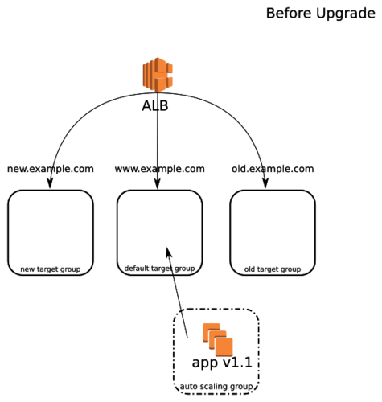

ec2_asg has a bunch of fixes in devel (e.g. allowing target groups to be removed from ASGs!)
Using them now
All will be in Ansible 2.4. If you don't want to run devel ansible, you can always just copy the modules into a directory (e.g. library) and set
[defaults]
library = ./library
in ansible.cfg
What are ALBs
Layer 7 routing
Rules are used to match host or path and send to a target group
Target groups can be populated by ASGs (or just directly by instances)
One ASG can populate multiple TGs
Initial state
Before upgrade
Deploy
Deploy new instances
Promote
Upgrade
Finalise
Tidy up
Ansible approach
For e.g. promotion, use elb_target_group_facts to find the ASG in the default target group, and then update that ASG to be in the old target group using ec2_asg module. Repeat for moving the new target group ASG to the default target group